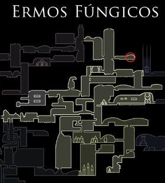
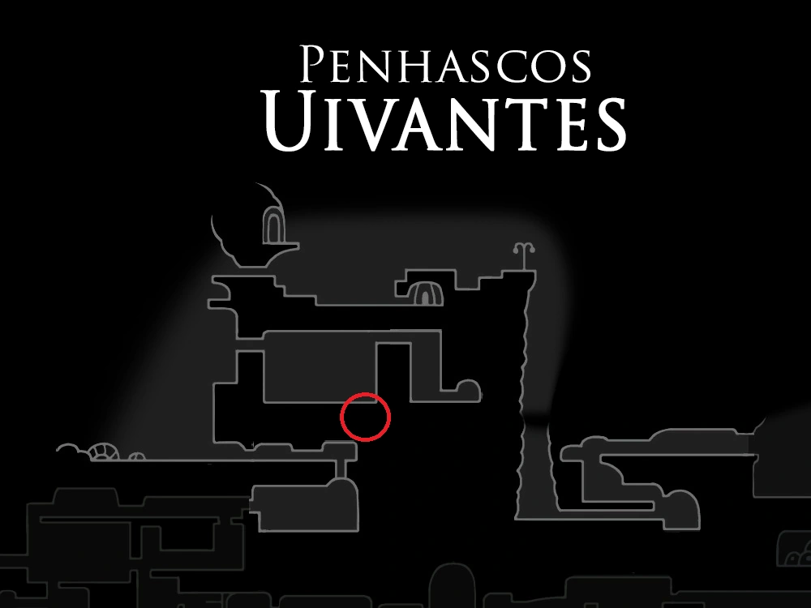

O amuleto Coração Frágil é um amuleto que quebra se o portador morrer, encontrado na loja do Come Pernas, nos Ermos Fúngicos.

Força Frágil
Fortalece o portador, aumentando o dano causado aos inimigos com o Ferrão.

Força Inquebrável
Vá até o topo dos Ermos Fúngicos, e você irá encontrar um NPC chamado
Come Pernas, e ele te irá vender o amuleto por 500 a 600 Geo mais ou
menos, e caso você morra com o amuleto equipado, apenas vá ao Come
Pernas de novo e ele concertará seu amuleto. e caso você queira
melhorar-lo para um Força Inquebrável, que é o mesmo amuleto só que
não quebra caso morra, você apenas precisa ir pra cabana da Divine
(necessita ter feito o ritual de invocação do Grimm antes) e dar o
amuleto pra ela, ela irá comer o amuleto e você irá ter que pagar
15.000 Geo pra ela te dar o força inquebrável , e assim você irá ter o
amuleto novinho junto com um cheiro estranho... que o Come Pernas diz
que é um cheiro levemente agradável pra ele.

